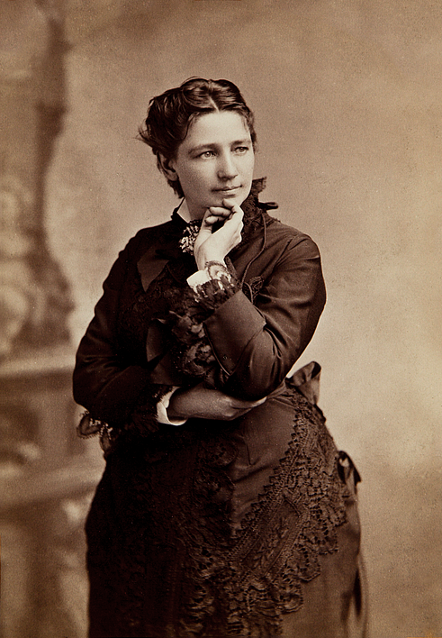
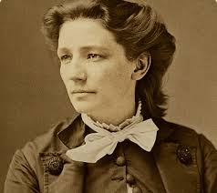
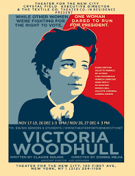

Victoria Woodhull
I shall not change my course because those who assume to be better than I desire it.
Biography

Victoria Claflin Woodhull, later Victoria Woodhull Martin, was an American leader of the women's suffrage movement. In 1872, she ran for President of the United States. Woodhull was an activist for women's rights, labor reforms, and the rights of freedom to marry, divorce, and bear children without social restriction or government interference.
Early Life

Woodhull was born Victoria California Claflin, the seventh of ten children (six of whom survived to maturity),[10] in the rural frontier town of Homer, Licking County, Ohio. She had a very traumatic and abusive childhood, her dad sexually assaulting her and whipping her as a child. Woodhull was very spiritualistic and followed literature, saying that it gave her belief in a better life. By age 11, Woodhull had only three years of formal education, but her teachers found her to be extremely intelligent. She was forced to leave school and home with her family when her father, after having "insured it heavily," burned the family's rotting gristmill. When he tried to get compensated by insurance, his arson and fraud were discovered; he was run off by a group of town vigilantes. The town held a "benefit" to raise funds to pay for the rest of the family's departure from Ohio.
Careers
In the years leading up to her run for presidency, she had various careers. Her and her sister became the first women stockbrokers and opened a brokerage firm on Wall Street. The sisters then used the money they made from the brokerage to found a newspaper, the Woodhull anf Claflin's Weekly, which at its height had national circulation of 20,000. Its primary purpose was to support Victoria Claflin Woodhull for President of the United States. She was also a women's rights advocate and supported First International.
Her Run for Presidency

Woodhull announced her candidacy for president by writing a letter to the editor of the New York Herald on April 2, 1870. Woodhull was nominated for President of the United States by the newly formed Equal Rights Party on May 10, 1872, at Apollo Hall, New York City. A year earlier, she had announced her intention to run. Also in 1871, she spoke publicly against the government being composed only of men; she proposed developing a new constitution and a new government a year thence. Her nomination was ratified at the convention on June 6, 1872. This made her the first woman candidate. While many historians and authors agree that Woodhull was the first woman to run for President of the United States, some have questioned that priority given issues with the legality of her run. They disagree with classifying it as a true candidacy because she was younger than the constitutionally mandated age of 35. However, election coverage by contemporary newspapers does not suggest age was a significant issue.